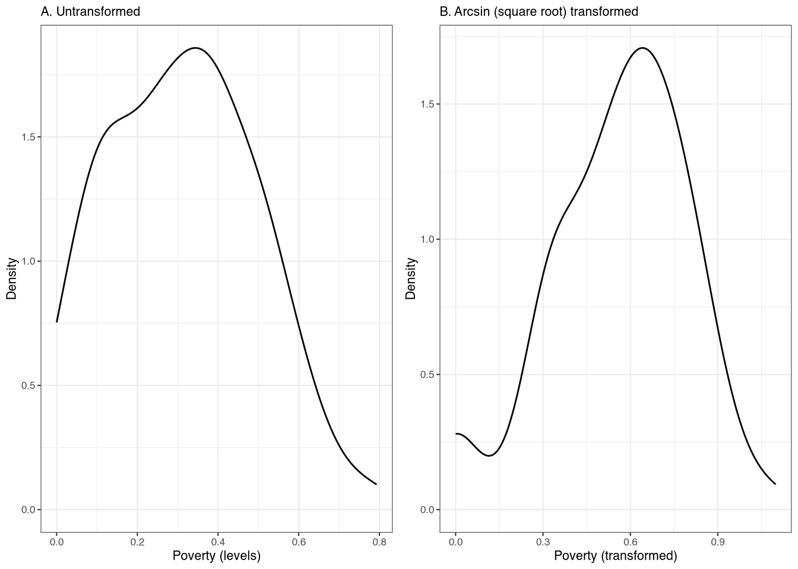
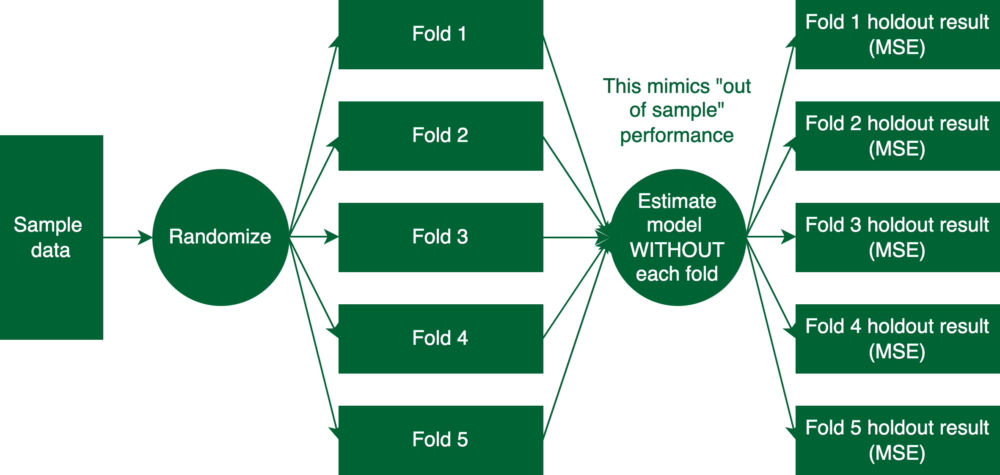

Once we have all of the geospatial features, we now need to think about choosing which features we want to use in our model and whether we want to use our raw features to create new indicators. Choosing features is particularly important with geospatial data due to the sheer number of features we can create. We have already created a number of features, but we can also create new features, transform existing features, and use lasso to select features. We will discuss each of these in turn. In this section, we will be using the final, cleaned version of features in the data/geovarseas.csv file.
3.1 Creating new features e.g. admin means
We will be estimating models at the admin-4 level. However, this does not mean that all of our predictors must necessarily be at the admin-4 level. For example, we can create means or standard deviations at higher levels (e.g. admin 3). We can also create lagged means or standard deviations at the admin 4 level, as well as interactions between different features.
As a simple example, consider creating total population at the admin-3 level, in addition to the admin-4 level. Let’s first load the features into R and do a bit more cleaning:
# load featuresfeatures <-read_csv("data/geovarseas.csv")# the population column is mwpophead(features)
Let’s now create one more variable, which is total population at the admin-3 level:
# create TOTAL pop at admin3 level:features <- features |>group_by(TA_CODE) |>mutate(popTA =sum(mwpop, na.rm =TRUE)) |>ungroup()
Here, we take advantage of the tidyverse’s group_by() and mutate() functions to aggregate total population up to the admin-3 level, but keeping the dataset itself at the admin-4 level.
As another example, let’s consider NDVI, which is a measure of vegetation (“greenness”). In countries like Malawi, NDVI can be highly predictive of poverty due to its correlation with the agricultural harvest. However, at the same time, the exact timing of NDVI measures can be very important for capturing this relationship, due to the seasonality inherent in rain-fed agricultural production. In practice, we often pull historical NDVI and then include things like long-term mean, long-term max, long-term min, and even long-term standard deviation, in addition to current values.
In our simple example, we downloaded 12 separate NDVI files1 and we can use these to calculate things like min/mean/sd of NDVI throughout the year. In the features object, the NDVI columns are named ndviM, where M is an integer from 1 to 12, indicating the month of the year.
Let’s create some new values, such as the annual mean, max, min, and standard deviation:
Here, we take advantage of a new function we have not used before: apply(). The apply() function is very useful. In this case, we are going to “apply” a single function to different columns of ndviextracted. Let’s go through each row in the above code:
This row does something slightly more advanced. We want to find the location of the columns that contain the string “ndvi” in the column names. We can do this using grep(), which returns the index of the columns that contain the string “ndvi”. We can then use this index to find the columns we want.
ndvimean: We are going to take the mean of the NDVI values for each row, which is what the 1 represents in the function call (if we wanted to apply it down columns, we would use a 2 instead). We use apply() to apply the mean() function to each row, excluding missing values. The next three rows do something similar, just calling a different function instead of the mean.
Here we are looking at the first few rows of df, but only for the new columns we just created.
3.2 Thinking about transformations
In addition to creating new variables through aggregation to a higher level of geography or combining data over time, we can also transform both our (potential) predictor variables and our outcome variable, through, for example, log transformations. Why might we want to transform our variables? There are two primary reasons:
Improve the predictive ability of the model. For example, a log transformation can sometimes make the relationship between a predictor and the outcome more linear, which is particularly important for linear models (which are the workhorse of SAE).
Improve the properties of the residuals. In SAE, we often use a parametric bootstrap for point estimation and inference. In our case, we make two key assumptions: the residual is normally distributed and the random effects are normally distributed. Transforming the outcome variable, in particular, can sometimes make the residuals more normal, which can improve the properties of the bootstrap.
Let’s start with the outcome: poverty rates at the admin-4 level. Before diving into this, it is important to clarify that the assumptions we make in our SAE model are not about the distribution of the outcome itself, but rather about the residuals and random effects. Nonetheless, outcomes that are more “normally” distributed do tend to have better properties in terms of estimation.
Figure 1: Poverty rates in Northern Malawi

In the above figure, we show the density of poverty rates in Northern Malawi. The left panel shows the untransformed poverty rates, while the right panel shows the poverty rates after an arcsin (square root) transformation.2 We have found that this transformation performs particularly well when the outcome is a proportion, as it is in this case (it varies between 0 and 1). It is quite clear from the figure that the transformed outcome is more “normal” than the untransformed outcome. However, since we are really interested in the residuals, we discuss model diagnostics more below, where we also look at statistics for skewness and kurtosis of the residuals and random effects.
But since we are really interested in the residual, we can look at how a transformation might affect the predictive power of the model. To do this, we will use the feols() function from the package fixest.3
Before we do this, however, we need to recode some of the key predictors: land cover classifications. Right now, the land cover classification values are not true proportions! They are counts of pixels of different land classifications within each EA. We need to turn these into proportions. We can do this by dividing by the total number of pixels in each EA. Let’s do this:
# find columns we wantlandcols <-grep("coverfraction", names(features))# how many total pixels?features$totalpixels <-apply(features[,landcols], 1, sum, na.rm =TRUE)# go through each one and replace with proportion:for (i in landcols){ features[,i] <- features[,i]/features$totalpixels}# remove total pixelsfeatures <- features |>select(-totalpixels)summary(features[,landcols])
barecoverfraction urbancoverfraction cropscoverfraction grasscoverfraction
Min. :0.000000 Min. :0.000000 Min. :0.0000 Min. :0.0000
1st Qu.:0.005634 1st Qu.:0.009176 1st Qu.:0.2756 1st Qu.:0.2449
Median :0.012542 Median :0.021913 Median :0.3707 Median :0.2660
Mean :0.014802 Mean :0.103282 Mean :0.3428 Mean :0.2533
3rd Qu.:0.021850 3rd Qu.:0.051555 3rd Qu.:0.4351 3rd Qu.:0.2904
Max. :0.091131 Max. :1.000000 Max. :0.6276 Max. :0.5254
mosscoverfraction waterpermanentcoverfraction waterseasonalcoverfraction
Min. :0 Min. :0.0000000 Min. :0.000000
1st Qu.:0 1st Qu.:0.0000000 1st Qu.:0.000000
Median :0 Median :0.0000000 Median :0.000000
Mean :0 Mean :0.0008774 Mean :0.001152
3rd Qu.:0 3rd Qu.:0.0000000 3rd Qu.:0.000000
Max. :0 Max. :0.1184433 Max. :0.161355
shrubcoverfraction snowcoverfraction treecoverfraction
Min. :0.0000 Min. :0 Min. :0.00000
1st Qu.:0.1160 1st Qu.:0 1st Qu.:0.08103
Median :0.1397 Median :0 Median :0.11777
Mean :0.1307 Mean :0 Mean :0.15302
3rd Qu.:0.1594 3rd Qu.:0 3rd Qu.:0.19193
Max. :0.2394 Max. :0 Max. :0.87709
The above output also provides some additional context for selecting the variables for our SAE models. In our SAE application below, we will be estimating a model using maximum likelihood estimation. In such cases, we can sometimes experience convergence issues, especially when some predictors have very little variation, In this example, several of the land cover classification variables have no variation – so they will not be selected at all in the lasso application we discuss below – but others show very little variation. Let’s remove all columns that have very little variation:
features <- features |>select(-c("mosscoverfraction", "waterpermanentcoverfraction", "waterseasonalcoverfraction", "snowcoverfraction"))
Let’s consider the three regressions, with poverty on the left-hand side and two separate predictors, cropscoverfraction and mwpop, on the right-hand side. We estimate three separate (simple) regressions with different transformations. In column one, all variables – including the outcome – are not transformed. In column two, we transform the outcome only, leaving both of the predictors untransformed. In column three, we transform both the outcome and the predictors, using the arcsin transformation for crop cover and the log transformation for population. The results are in Table 1.
# new datapov <-read_csv("data/ihs5ea.csv")# not we join pov INTO features. This means we have all admin 4 areas, with or without sample datapov <- features |>left_join(pov, by ="EA_CODE") |>mutate(mwpop = mwpop/1000)reg1 <-feols(poor ~ cropscoverfraction + mwpop, data = pov, weights =~total_weights, vcov ="HC1")reg2 <-feols(asin(sqrt(poor)) ~ cropscoverfraction + mwpop, data = pov, weights =~total_weights, vcov ="HC1")reg3 <-feols(asin(sqrt(poor)) ~asin(sqrt(cropscoverfraction)) +log(mwpop), data = pov, weights =~total_weights, vcov ="HC1")
Table 1: Variable transformations
Transforming just the outcome improves the fit, at least as measured by r-squared, by around 7.2 percent. All of the transformations, however, increase the predictive power of the regression by 27.8 percent. In other words, the transformations of just these two variables, along with the outcome, can lead to a substantial improvement in the model.4
3.3 lasso and glmnet
In the above sections, we have shown how transforming our predictor and outcome variables can improve the fit of a model. However, we have not yet discussed how to choose which features to actually include in the model. Including all potential predictors has two primary problems:
First, we often have more predictors than observations. In this case, it is impossible to estimate the model.
Even if we have more observations than predictors, including all predictors can lead to overfitting. In essence, our model can end up predicting noise in the data, rather than true underlying relationships. This will lead to very poor performance, especially when predicting into out-of-sample data.
There are many ways to select predictors, but the most commonly used method is “lasso”.5 Lasso is a regression method that “penalizes” coefficients. To put it simply, it will shrink coefficients to zero if they do not meaningfully improve the performance of the model. In practice, this approximately equalizes in-sample and out-of-sample r-squared.
In its simplest form, lasso is a linear regression model with an additional penalty term. We minimize the following objective function with respect to \(\beta\):
where \(\lambda\) is a tuning parameter that determines the size of the “penalty” and \((y-X\beta)^2\) is the usual ordinary least squares minimiazation problem. Importantly, the penalty term can in principle take on any (non-negative) value. When \(\lambda=0\), lasso is just a linear regression. As \(\lambda\) increases, fewer and fewer variables will be selected (i.e. will have non-zero coefficients). So what is the “correct” value for \(\lambda\)? In practice, we often select \(\lambda\) using cross validation.
Figure 2: Cross validation set up

Cross validation is a process that is designed to mimic out-of-sample estimation. Consider the setup in Figure 2. We first take the sample data and randomize it into N \(folds\); the most common number of folds is 10, but the diagram shows five for simplicity. Since we are trying to mimic out-of-sample performance, we estimate a model on \(N-1\) folds and then predict on the remaining fold. We then calculate the mean squared error (MSE) of the prediction. We repeat this process N times, each time leaving out a different fold. We can then find the mean MSE across all of the folds. We can repeat this process many times, for different values of \(\lambda\). The final (“optimal”) value of \(\lambda\) is the one that minimizes the mean MSE across folds.
Thankfully, we do not need to do all of this by hand. Instead, we can use the cv.glmnet() function from the glmnet package. This function will automatically assign observations to folds and calculate MSE for different values of \(\lambda\). To do this, glmnet needs to be installed, which can be done using the install.packages("glmnet") function, and then loading the library with library(glmnet).
The following code illustrates this process using already cleaned data. The cleaned features are in the geovars.csv data and the outcome is in the ihs5ea.csv data. Both datasets are again from Northern Malawi and are already collapsed to the admin4 (EA) level. First, load both datasets:
# load povertypov <-read_csv("data/ihs5ea.csv")# load featuresfeatures <-read_csv("data/geovarseas.csv")# add features to povpov <- pov |>left_join(features, by ="EA_CODE")head(pov)
We need to ensure we know which column includes the outcome of interest (in this case, poor) and which columns include all of the predictors. The data geovarseas.csv data has been cleaned such that there are only two non-predictors: the admin4 identifier (EA_CODE) and the admin3 identifier (TA_CODE). This means that all columns from mwpop to ncol(pov) are the predictors. We should be very specific about what Y and X are in this case, before using cv.glmnet.6 In addition, recall that we discussed using a transformation of the outcome variable, specifically. Let’s also do that here:
Y <-as.vector(asin(sqrt(pov$poor)))# column 6 is the location of mwpopX <-as.matrix(pov[,7:ncol(pov)])# here is the cross validation to select lambdaset.seed(234056) # set seed for consistent results!# five folds to keep with the simple examplecvresults <-cv.glmnet(x = X, y = Y, nfolds =5)cvresults
Call: cv.glmnet(x = X, y = Y, nfolds = 5)
Measure: Mean-Squared Error
Lambda Index Measure SE Nonzero
min 0.01986 35 0.04466 0.002446 10
1se 0.04180 19 0.04697 0.002626 4
The cvresults object contains information about two different options for \(\lambda\): the value of \(\lambda\) that minimizes MSE (lambda.min) and the value of \(\lambda\) that is a bit larger (lambda.1se), meaning it is more conservative and will usually lead to fewer non-zero coefficients. In this example, the number of non-zero coefficients is either 10 or 4, depending on which \(\lambda\) we choose.7 We can use the plot() function to see the results, with the results in Figure 3 (the dotted lines represent the two “optimal” values of \(\lambda\)).
plot(cvresults)
Figure 3: CV results
The next step is the most important: extracting the variables that have non-zero coefficients. While seeing the coefficients is straightforward, extracting the names of the variables is unfortunately more difficult than it probably should be.
To simply view the coefficients, we can use the coef() function, as shown below. Note that the code uses head() to keep the size of the R output to a managable size for this guide:8
head(coef(cvresults))
6 x 1 sparse Matrix of class "dgCMatrix"
s1
(Intercept) 5.752724e-01
mwpop .
average_masked -1.427754e-02
barecoverfraction 3.923403e-05
urbancoverfraction .
cropscoverfraction .
The coefficients showing a . have zero value. We can use this fact to extract the names of the variables with non-zero coefficients. We can see this if we turn the coef() result into a matrix:9
After turning the results into a matrix, we can see that the . coefficients become zeros. With this in mind, we can finally extract the names of the non-zero coefficients, as follows:
# we can specify the lambda we want to use; "lambda.min" or "lambda.1se"nonzero <-as.matrix(coef(cvresults, "lambda.min"))nonzero <-rownames(nonzero)[nonzero[,1]!=0]nonzero
In this example, we have three non-zero coefficients, but we want to remove the intercept, which is always the first coefficient. We remove the intercept because it will automatically be added by the SAE function that we use later. This is done with the nonzero <- nonzero[-1] line of code above.
The final step is to turn this into a formula, of the form \(outcome ~ x_1 + \cdots + x_n\), where \(x_1, \ldots, x_n\) are the non-zero coefficients. We can do this with the paste() function and the collapse option, as follows:
The collapse = " + " option tells paste() to separate the variables with a + sign. Finally, we have to explicitly tell R that this is a formula, which we do using as.formula(). This is the formula we will use below in section ?@sec-estimating.
Footnotes
This is the for loop at the end of the geospatialpull.ipynb notebook.↩︎
The arcsin square root transformation is defined as \(y^*=\sin^{-1}(\sqrt{y})\).↩︎
You can also use the lm() function from base R. However, we prefer the feols() function because it makes some things much easier, like adding weights.↩︎
We note that we only show these results for illustrative purposes. In practice, we do not use r-squared as a measure of model fit, especially when only looking within the sample.↩︎
Lasso stands for “least absolute shrinkage and selection operator,” but it is often simply refered to by its acronym.↩︎
A small note: the outcome needs to be a vector and the predictors need to be in the form of a matrix. Both of these requirements are specified in the code.↩︎
Note that we need to set a seed if we want consistent results when re-running the cross validation. This is because cross validation relies on some degree of randomness (in the allocation across folds).↩︎
The two non-negative variables visible in the output are nightlights (average_masked) and the proportion of the area that is bare ( barecoverfraction). Both coefficients are in the expected direction.↩︎
Again, head() is used to limit the output to the first few variables for practical purposes.↩︎